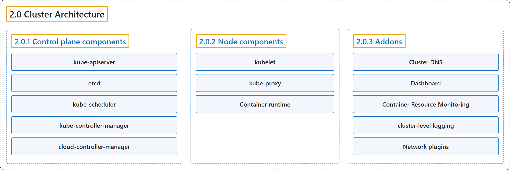

2.0 Cluster Architecture
Classification

Glossary
| Term | Definition | 中文翻译 | Source |
|---|---|---|---|
| 2.0 Cluster Architecture 集群架构 |
"A Kubernetes cluster consists of a control plane plus a set of worker machines, called nodes, that run containerized applications." | Kubernetes 集群由一个控制平面加上一组称为节点的工作机器组成，它们运行容器化应用。 | The Kubernetes Authors, n.d., "Cluster Architecture", para. 2 |
| 2.0.1 Control plane components 控制平面组件 |
"The control plane's components make global decisions about the cluster (for example, scheduling)" | 控制平面组件对集群做出全局决策（例如调度） | The Kubernetes Authors, n.d., "Control plane components", para. 1 |
| kube-apiserver kube-apiserver |
"The API server is a component of the Kubernetes control plane that exposes the Kubernetes API." | API 服务器是 Kubernetes 控制平面的一个组件，暴露 Kubernetes API。 | The Kubernetes Authors, n.d., "kube-apiserver", para. 1 |
| etcd etcd |
"Consistent and highly-available key value store used as Kubernetes' backing store for all cluster data." | 一致且高可用的键值存储，用作 Kubernetes 所有集群数据的后备存储。 | The Kubernetes Authors, n.d., "etcd", para. 1 |
| kube-scheduler kube-scheduler |
"Control plane component that watches for newly created Pods with no assigned node, and selects a node for them to run on." | 控制平面组件，监视新创建且未分配节点的 Pod，并为它们选择运行的节点。 | The Kubernetes Authors, n.d., "kube-scheduler", para. 1 |
| kube-controller-manager kube-controller-manager |
"Control plane component that runs controller processes." | 控制平面组件，运行控制器进程。 | The Kubernetes Authors, n.d., "kube-controller-manager", para. 1 |
| cloud-controller-manager cloud-controller-manager |
"A Kubernetes control plane component that embeds cloud-specific control logic." | 一个 Kubernetes 控制平面组件，嵌入了云平台特定的控制逻辑。 | The Kubernetes Authors, n.d., "cloud-controller-manager", para. 1 |
| 2.0.2 Node components 节点组件 |
"Node components run on every node, maintaining running pods and providing the Kubernetes runtime environment." | 节点组件在每个节点上运行，维护运行中的 Pod 并提供 Kubernetes 运行时环境。 | The Kubernetes Authors, n.d., "Node components", para. 1 |
| kubelet kubelet |
"An agent that runs on each node in the cluster." | 一个代理，运行在集群中每个节点上。 | The Kubernetes Authors, n.d., "kubelet", para. 1 |
| kube-proxy kube-proxy |
"kube-proxy is a network proxy that runs on each node in your cluster" | kube-proxy 是一个网络代理，运行在集群中每个节点上 | The Kubernetes Authors, n.d., "kube-proxy (optional)", para. 1 |
| Container runtime 容器运行时 |
"A fundamental component that empowers Kubernetes to run containers effectively." | 一个基础组件，让 Kubernetes 能够高效运行容器。 | The Kubernetes Authors, n.d., "Container runtime", para. 1 |
| 2.0.3 Addons 插件 |
"Addons use Kubernetes resources (DaemonSet, Deployment, etc) to implement cluster features." | 插件使用 Kubernetes 资源（DaemonSet、Deployment 等）来实现集群功能。 | The Kubernetes Authors, n.d., "Addons", para. 1 |
| Cluster DNS 集群 DNS |
"Cluster DNS is a DNS server, in addition to the other DNS server(s) in your environment, which serves DNS records for Kubernetes services." | 集群 DNS 是一个 DNS 服务器，独立于环境中的其他 DNS 服务器，为 Kubernetes 服务提供 DNS 记录。 | The Kubernetes Authors, n.d., "DNS", para. 2 |
| Dashboard 仪表板 |
"Dashboard is a general purpose, web-based UI for Kubernetes clusters." | 仪表板是一个通用的、基于 Web 的界面，面向 Kubernetes 集群。 | The Kubernetes Authors, n.d., "Web UI (Dashboard)", para. 1 |
| Container Resource Monitoring 容器资源监控 |
"Container Resource Monitoring records generic time-series metrics about containers in a central database, and provides a UI for browsing that data." | 容器资源监控把容器的通用时间序列指标记录到中央数据库中，并提供浏览这些数据的界面。 | The Kubernetes Authors, n.d., "Container resource monitoring", para. 1 |
| cluster-level logging 集群级日志 |
"A cluster-level logging mechanism is responsible for saving container logs to a central log store with a search/browsing interface." | 集群级日志机制负责把容器日志保存到带有搜索/浏览界面的中央日志存储中。 | The Kubernetes Authors, n.d., "Cluster-level Logging", para. 1 |
| Network plugins 网络插件 |
"Network plugins are software components that implement the container network interface (CNI) specification." | 网络插件是软件组件，实现容器网络接口（CNI）规范。 | The Kubernetes Authors, n.d., "Network plugins", para. 1 |
References
The Kubernetes Authors. (n.d.). Cluster Architecture. Kubernetes Documentation. Retrieved October 31, 2026, from https://kubernetes.io/docs/concepts/architecture/